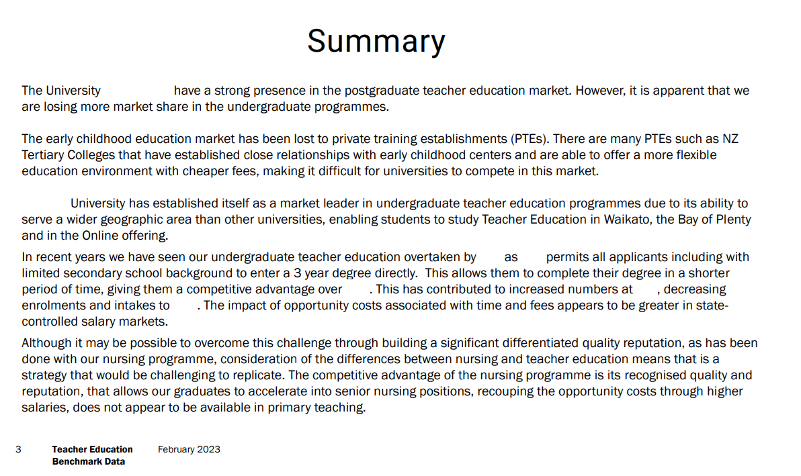
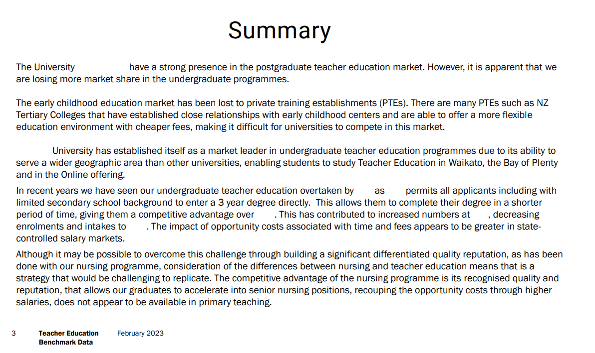

Teacher Education Benchmarking Analysis
A comprehensive analysis that assessed the University's market position, identifying declining undergraduate enrolment and lost market share against key competitors.
 

1. Project Overview & Role
Timeline 3 Months | Stakeholders Faculty Deans, Director of Planning | Role: Lead Data Analyst, Data Pipeline Developer.
This project was initiated in response to executive concerns over a multi-year decline in undergraduate enrolment within the Education Faculty. The primary goal was to provide data-driven insight into market performance, identify the root causes of lost market share and deliver an interactive dashboard for ongoing performance tracking.
2. The Problem Statement / Challenge
The University had observed a 13% decline in undergraduate enrolments year-over-year for the last four years but lacked the robust, competitor-level data to understand why. The existing reporting was manual, siloed and only focused on internal metrics, preventing strategic comparison against public and private universities in the region.
- Lack of Market Context: No accurate way to measure market share or benchmark against competitors.
- Data Fragmentation: Enrolment, financial and competitor data resided in separate, incompatible systems.
- Limited Timeliness: Insights were delayed due to complex data consolidation, reducing their usefulness for decision-making.
3. Methodology & Solution
Data & Tools
Data was extracted from the University’s internal Information System enriched with public data from the Tertiary Education Organisation (TEO), and consolidated in a Snowflake data warehouse. MicroStrategy was selected as the front-end visualisation tool.
Key Analytical Steps
- ETL Pipeline: Built SQL scripts within Snowflake to clean, transform, and integrate fragmented data sources into a unified star schema.
- Market & Forecasting Analysis: Developed a market share metric using a custom LOD expression in MicroStrategy and a linear regression model (Python / scikit-learn) to forecast enrolment trends and identify early risk signals.
- Stakeholder Collaboration: Conducted discussions with Subject Matter Experts (SMEs) to validate assumptions, understand market dynamics and incorporate external factors impacting enrolment performance.
4. Key Results & Impact
7%
Market Share Decline Identified
Q1 2023
Projected Enrolment Decline Flagged
Programme-Level
Decision Support Provided
The analysis identified two critical insights: a 7% decline in market share within teaching undergraduate programmes and early warning signals of enrolment softening, enabling leadership to intervene before performance materially declined.
- Strategic Realignment: Deans used the dashboard to approve a new regional strategy, prioritise investment in online course offerings and agree on a data-backed list of programmes to be discontinued.
- Decision Enablement: The solution provided a single, trusted view of market performance and forecasts, supporting evidence-based programme planning and portfolio optimisation.